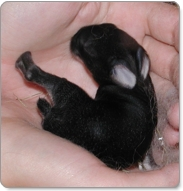

Králík amamský se živí více než 29 druhy rostlin, mezi které patří 17 druhů keřů a 12 druhů bylin, ze kterých konzumuje výhonky a žaludy. Také jí ořechy a kambium široké škály rostlinných druhů. Králík amamský se rovněž živí kůrami stonků a větviček křovitých rostlin. Proto je ideální prostředí pro tyto králíky v oblasti mezi dospělými a mladými lesy. Králíci amamští obývají dospělé husté lesy kvůli ochraně a přítomnosti stravy. V různých obdobích roku se stravují hustými vytrvalými travinami a bylinami v mladých lesích. Proto je pro jejich život nejlepší stanoviště, ze kterého mají snadný přístup do mladých i dospělých lesů bez překážek mezi těmito dvěma typy lesů.
Králík amamský je noční živočich, který se páří od března do května a od září do prosince. Vrh mívá jedno nebo dvě mláďata. Během dne matka vyhrabává díru v zemi pro svá mláďata, aby je mohla skrýt. V noci otevře vchod do otvoru, aby ho střežila před predátory (jako jsou jedovatí hadi), a pak mláďata kojí. Potom uzavře otvor tak, že ho předními tlapami utěsní půdou a rostlinným materiálem. Králíci amamští spí během dne na skrytých místech, jako jsou jeskyně. Zvukovými projevy připomínají tito králíci čeleď pišťuchovitých.
